| 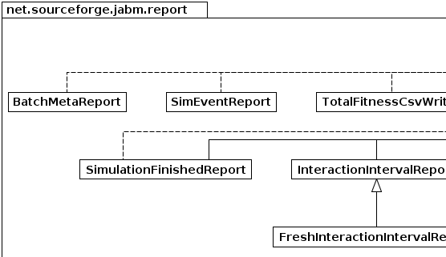 | 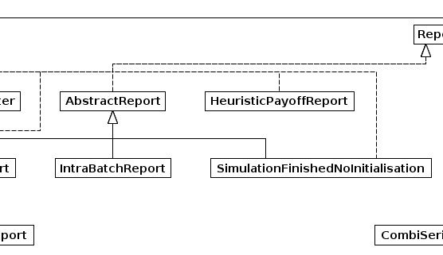 | 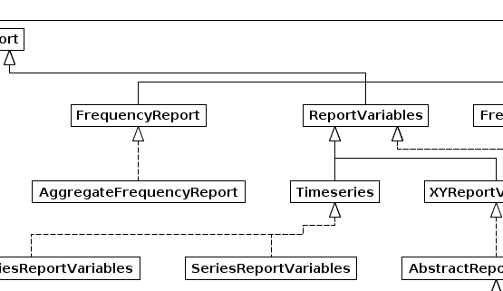 | 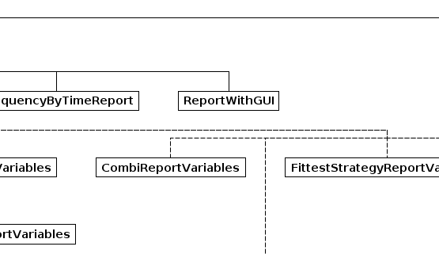 | 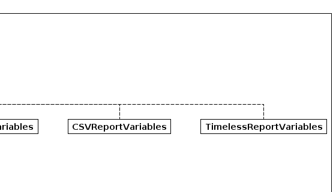 |
| 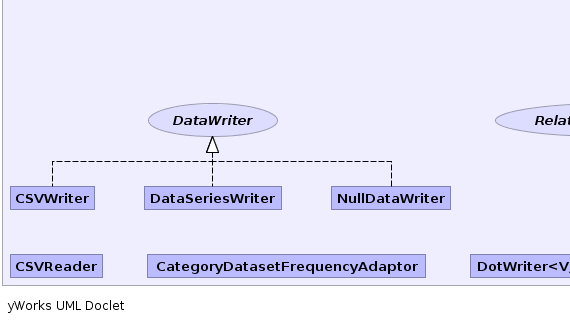 |  |
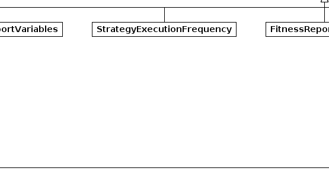 | 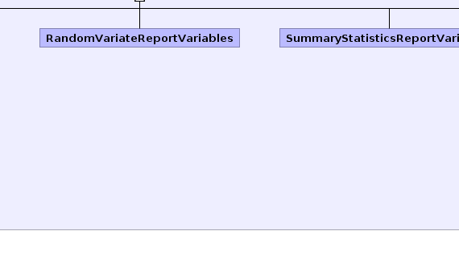 | 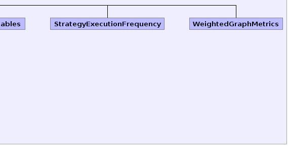 |
|
|||||||||
| PREV PACKAGE NEXT PACKAGE | FRAMES NO FRAMES | ||||||||
See:
Description
| Interface Summary | |
|---|---|
| DataWriter | Interface for logging data to a back-end store. |
| FrequencyByTimeReport | |
| FrequencyReport | |
| RelationshipTracker | |
| Report |
Objects implementing the Report interface provide reporting
functionality by collecting data on simulations. |
| ReportVariables | This interface defines Report objects which keep track of variables which are recomputed in response to various simulation events. |
| ReportWithGUI | A report which provides a graphical user-interface in the form
of a swing JComponent. |
| Taggable | |
| Timeseries | |
| WeightedEdge | |
| XYReportVariables | A set of ReportVariables which have one independent variable and several dependent variables. |
| Class Summary | |
|---|---|
| AbstractReport | |
| AbstractReportVariables | |
| AggregateFrequencyReport | |
| BatchMetaReport | |
| CategoryDatasetFrequencyAdaptor | |
| CombiSeriesReportVariables | |
| CSVReader | |
| CSVReportVariables | CSVReportVariables automatically record other ReportVariables to a comma separated variables (CSV) file whenever they are computed. |
| CSVWriter | A class for writing data to CSV (comma-separated variables) text files. |
| DataSeriesWriter | A data writer that stores data in a memory-resident data structure that can also be used as a data series model for a JSci graph, or a table model for a swing JTable component. |
| DotWriter<V,E> | |
| FitnessReportVariables | |
| FittestStrategyReportVariables | |
| FrequencyByTimeDataset | |
| FreshInteractionIntervalReport | |
| HeuristicPayoffReport | |
| InteractionIntervalReport | A report which samples data regularly in response to an InteractionsFinishedEvent. |
| IntraBatchReport | A report which collects data across simulations and updates report variables at the end of each simulation. |
| NullDataWriter | |
| PayoffByStrategyReportVariables | |
| PayoffMap | |
| RandomVariateReportVariables | |
| SeriesReportVariables | A report which incrementally records values from an underlying
ReportVariables object to an array each time it is computed. |
| SimEventReport | |
| SimulationFinishedReport | A report which initialises its variables at the start of each simulation and updates them at the end of each simulation. |
| StrategyExecutionFrequency | This class collects data on the frequency with which each strategy is executed. |
| SummaryStatisticsReportVariables | |
| TimelessReportVariables | |
| TotalFitnessCsvWriter | |
| WeightedGraphMetrics | |
Classes implementing monitoring and reporting functionality.
| 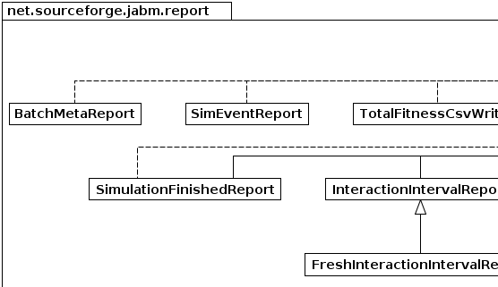 | 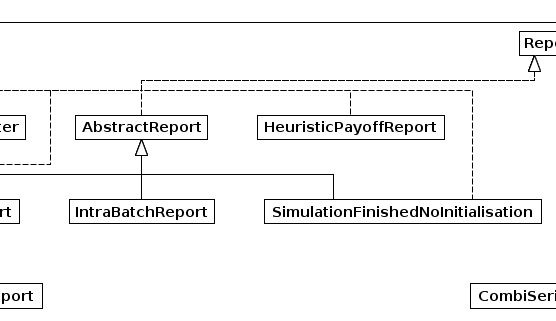 | 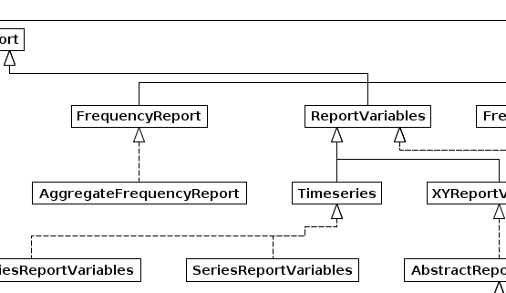 | 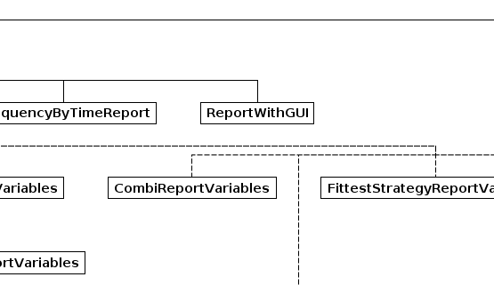 | 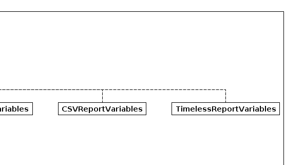 |
| 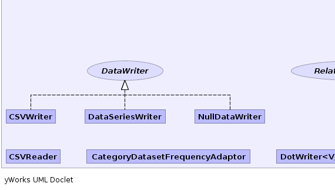 | |
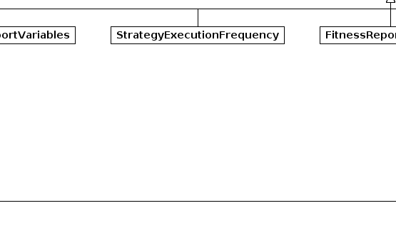 | 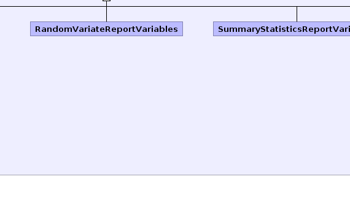 | 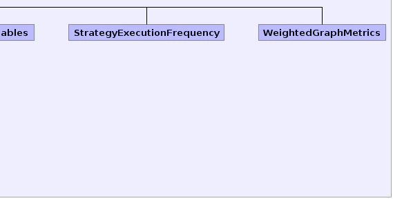 |
|
|||||||||
| PREV PACKAGE NEXT PACKAGE | FRAMES NO FRAMES | ||||||||